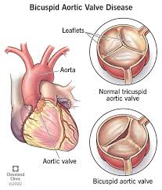

Aortic Valve
The aortic valve is another key valve in the heart, responsible for controlling blood flow from the heart to the rest of the body. Here’s a detailed explanation for your web structure:

Aortic Valve of the Heart
The aortic valve is located between the left ventricle (the heart's main pumping chamber) and the aorta, the largest artery in the body. It plays a critical role in ensuring that blood flows in the correct direction, from the heart to the body.
Function:
- After the left ventricle fills with oxygen-rich blood from the lungs, it contracts to pump the blood through the aortic valve and into the aorta.
- The aortic valve opens during the contraction, allowing blood to flow out of the heart and into the aorta, which then distributes it to the rest of the body.
- After the heart pumps, the valve closes to prevent blood from flowing backward into the left ventricle.
Structure:
- The aortic valve typically has three leaflets or cusps (known as the tricuspid valve), which form a tight seal when closed. However, some people are born with a bicuspid aortic valve, having only two leaflets.
- The leaflets open and close with each heartbeat, ensuring that blood moves in only one direction.
Aortic Valve Disorders:
- Aortic Stenosis: A condition in which the aortic valve becomes narrowed, restricting blood flow from the left ventricle into the aorta and causing the heart to work harder.
- Aortic Regurgitation (or Insufficiency): Occurs when the aortic valve doesn’t close properly, allowing blood to flow back into the left ventricle after it has been pumped into the aorta. This can lead to an enlarged heart over time.
- Bicuspid Aortic Valve: A congenital condition where the valve has only two leaflets instead of three, which can lead to stenosis or regurgitation.
The aortic valve ensures that blood exits the heart efficiently, enabling the circulatory system to supply oxygenated blood to the organs and tissues throughout the body.